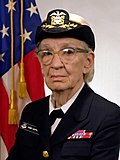

 Grace Hopper was a trailblazer in computer science and military service — combining deep mathematical training, wartime service in the Navy, and pioneering work in programming languages. Her insistence on making programming accessible (via English-based languages) and her standardization efforts helped shape the modern era of software. Her life also stands as an example of how one can bridge academia, military service, and industry impact.
Grace Hopper was born in 1906 in New York City and showed curiosity early—famously taking apart clocks just to see how they worked. She studied mathematics and physics at Vassar College, graduating in 1928, then earned her master’s and PhD in mathematics from Yale. After completing her doctorate, she returned to Vassar as a math professor.
Hopper joined the U.S. Navy Reserve during World War II and worked on the Harvard Mark I, one of the earliest electromechanical computers. After the war she helped develop the UNIVAC I and pioneered the compiler—software that translates human-readable instructions into machine code. Her work led directly to FLOW-MATIC and later COBOL, an English-like programming language that transformed business computing. Throughout her Navy and industry roles, she championed practical, user-friendly programming and helped standardize major languages.
Hopper retired from the Navy in 1986 as a Rear Admiral, one of the oldest active-duty officers at the time. She spent her later years speaking, consulting at Digital Equipment Corporation, and inspiring generations of technologists with her humor and clarity. Posthumously awarded the Presidential Medal of Freedom, she remains celebrated as a computing pioneer whose vision made programming more accessible and shaped modern software development.
Hopper framed computing’s future around four interlinked themes: data, hardware, software, and people. She argued that advances in computing hinge not just on machines or code, but on how we handle data and how people lead and adapt.
She used vivid analogies: for example, when one ox couldn’t move a log, you didn’t breed a bigger ox—you used two oxen. She likened that to computing: instead of just building a bigger computer, use multiple computers working together. Boing Boing
She addressed information protection and system architecture: how as computing grows, the challenge isn’t just more speed or capacity, but how data is managed, shared, secured, and how hardware and software interoperate. Ars Technica
Hopper stressed the importance of people, leadership, and risk-taking: She believed that training young people and encouraging them to “try it” has been among her most significant achievements. Long lost to time because it was recorded on media no longer supported by modern playback equipment, the lecture was recently recovered and released to the world. You can watch it in two parts below.
The Grace Hopper Celebration event features hundreds of sessions including technical talks, career workshops, culture panels, and hands-on learning opportunities. Networking is a central component—there’s an expo where attendees connect with top tech organizations, plus informal spaces for meet-ups and peer conversations. It emphasizes professional growth, skill-building, and community support—especially for women and under-represented groups in tech.
For more details, visit GHC 2024